TherapEze
Application design for a non-profit company


Our online psychology app offers comprehensive mental health services entirely online through phone calls, messaging, and video sessions. It connects users with experienced psychologists for counseling, therapy, and psychological assessments. In urgent situations, it ensures prompt access to professional support.
Project Overview
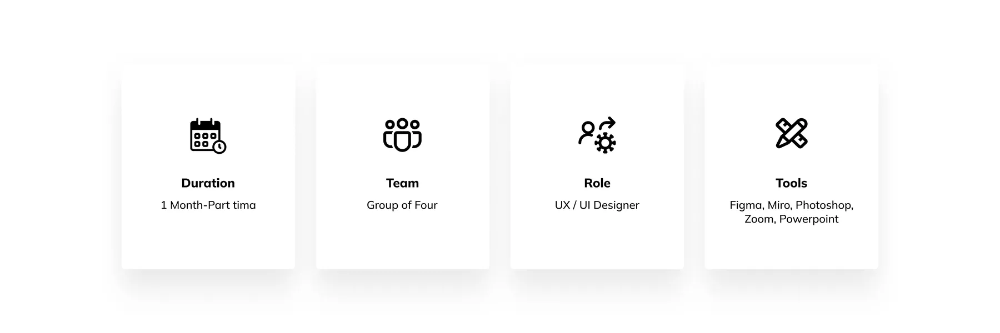
Goal
Our primary goal is to enhance users' mental well-being by providing easy and affordable access to professional psychological services entirely online.
Problem
Location and Time Constraints:
Users in remote areas or with busy schedules often find it difficult to access professional
High Costs:
The expense associated with therapy sessions can deter many individuals from seeking help.
My Design Process
Discover
When I work on projects, as much as my minds want to skip steps and jump to ideation and developing the prototype, I always consciously make myself stick with the design process and have a methodical approach. Of course, I prioritize tasks based on different constraints, but, I don’t skip important steps of the design process.
We conducted our research in two phases:
Phase 1: Survey and Interview
Phase 2: Competitive Analysis
Survey
We conducted a survey among a sample of 200 Iranians living abroad, with most participants aged between 25 and 45. In this survey, we asked them a summary of the following questions:
1. In which area did you receive counseling to improve your living conditions? The majority indicated that individual therapy was the most common area.
2. Which of the following are your priorities when choosing a counselor? Many respondents emphasized user reviews and the counselor's educational background.
Additionally, we asked two more questions, and the summary of their results can be observed.
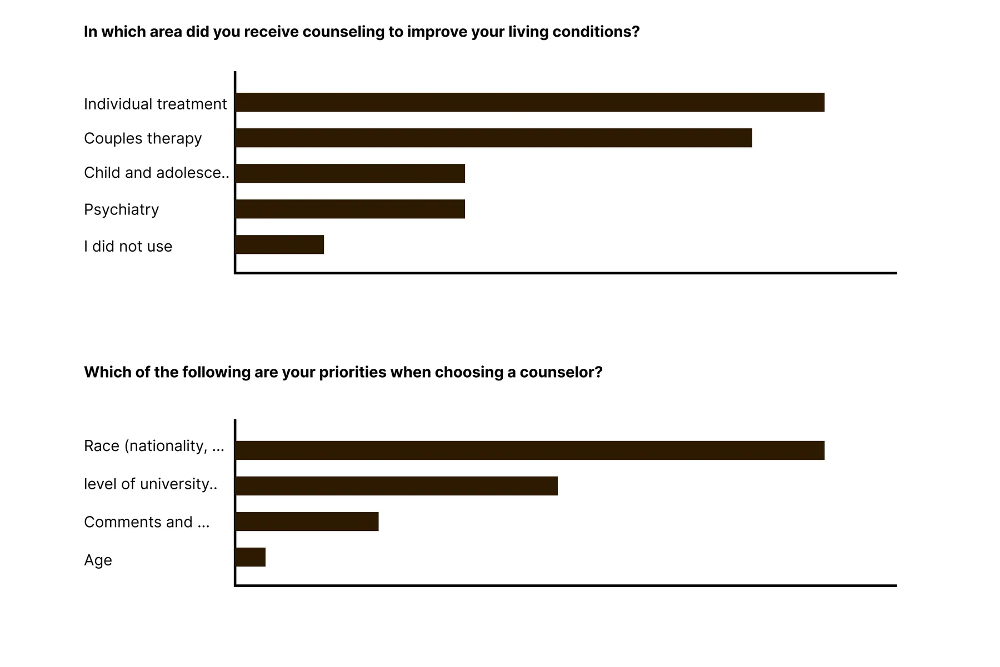
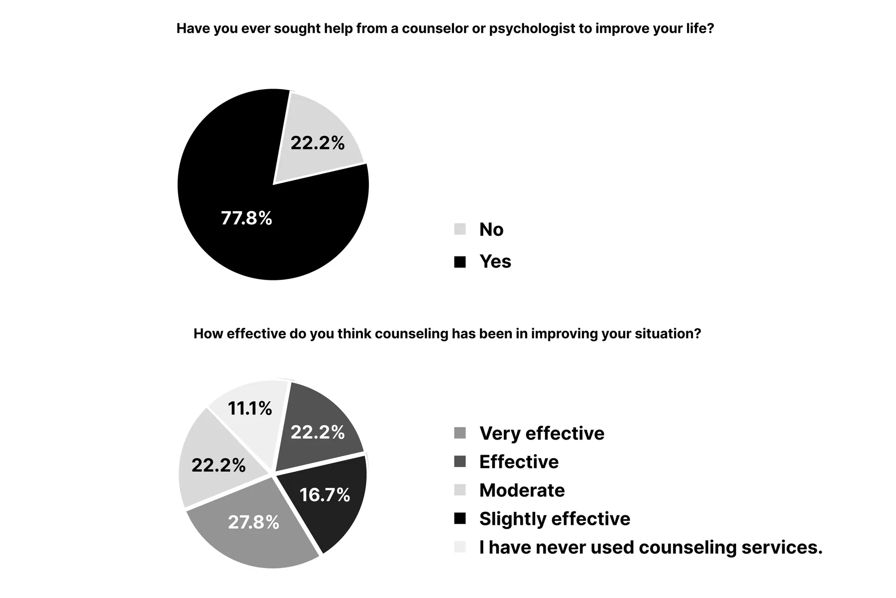
Interview and Affinity Diagram
Interviews started with gratitude to participants for their time, aiming to foster a safe space for open discussion.
Key points:
- Many migrants were open to online counseling due to limited access to counselors of their religion, nationality, or culture.
- Participants valued counselors' resumes and user reviews when selecting therapy services.
- High therapy costs led some to discontinue treatment, alongside negative experiences with judgmental therapists and lack of improvement in their quality of life.
- Some preferred audio courses for flexibility and affordability.
- Long appointment wait times were problematic, with immediate support being a priority.
- Web-based counseling was favored during emotional distress, emphasizing the importance of accessible online educational resources.
Responses were categorized in Miro for the next design phase, the Affinity Diagram.
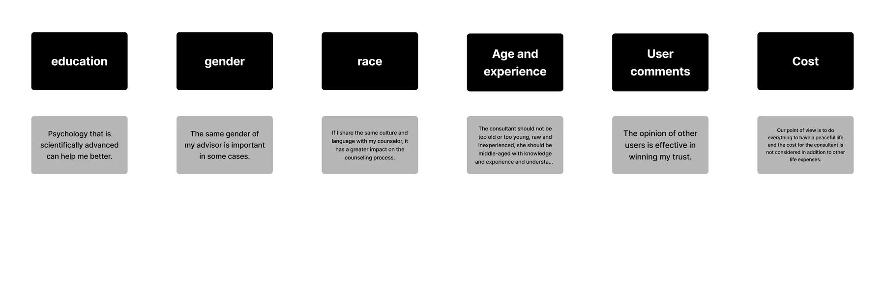
A summary of the most comments
Define
Understand the Business (SWOT)
My next step in my methodical approach is always to learn and define the business and make sure that I know business SWOT, which is strengths, weaknesses, opportunities, and threats.
Again, in this specific case, because we don’t have a real business, I had to make some assumptions.
But, knowing the business SWOT helps me have empathy for the user and the business during my design process.
Ideation (Diverge Ideas)
My next step was to start brainstorming and ideating.
Here are some of my initial ideas
Ideation (Converge Ideas)
Then I picked some of the ideas that were most relevant and important for this step of the design and I crossed out the rest.
I used the principle of Minimum Viable Product (MVP) and I considered each idea based on the impact versus effort matrix to make my decision. That’s because I believe a UX designer makes the business decisions in addition to the visuals. because when you talk about design some people tend to just think about the visuals.
Some of the ideas that I crossed out at this step are good ideas for the next step planning.
Persona
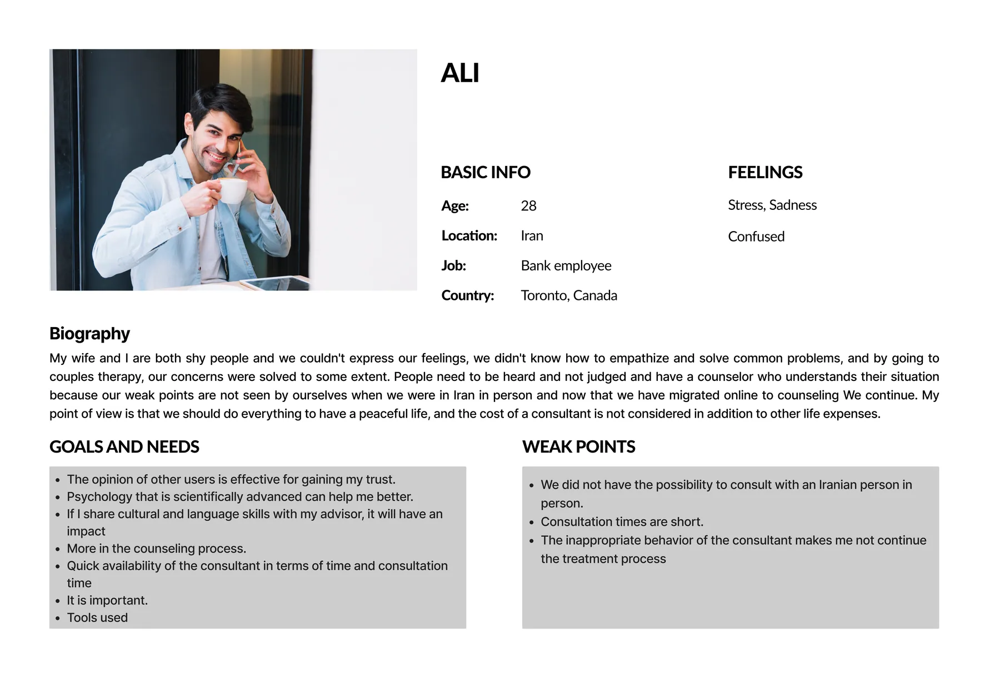
Develop
Task flow
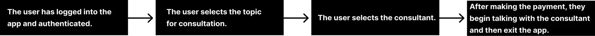
User flow
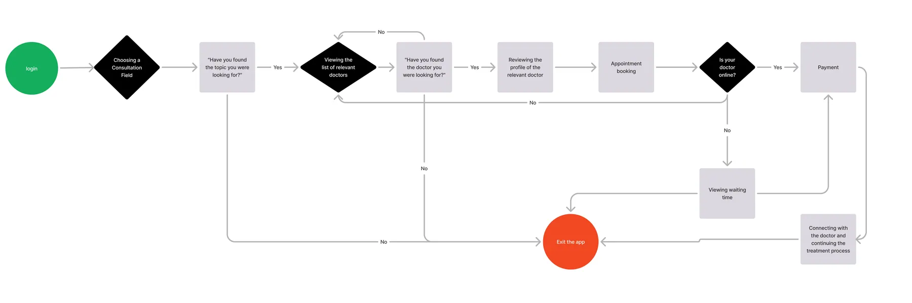
Competitive Analysis
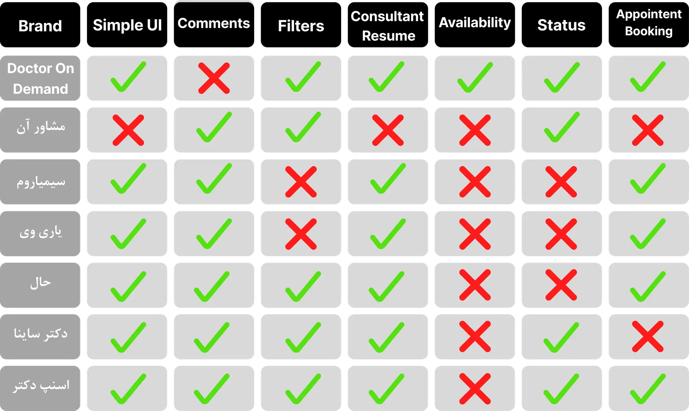
Wire-framing
Ideation and Wire-framing
What redesign decisions did we make?
The most important takeaways from our research are pain points and solutions.
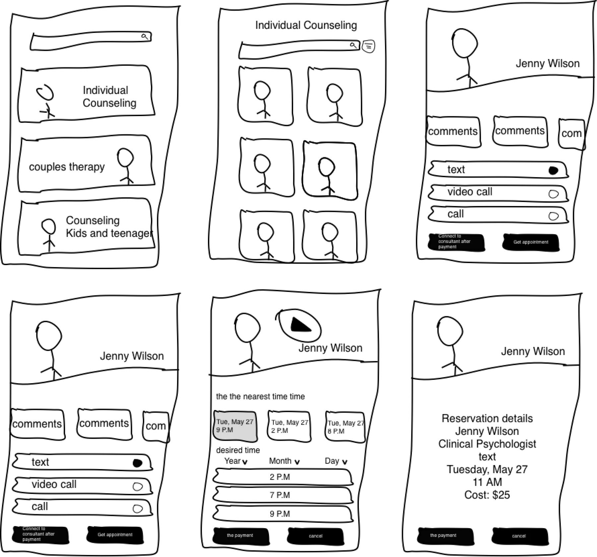
Low Fidelity
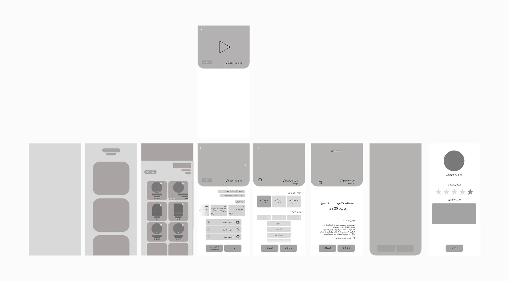
Mid Fidelity
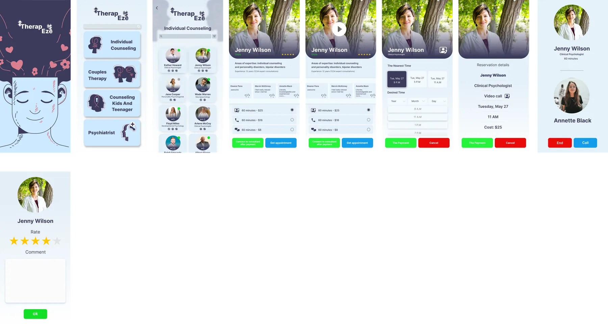
High Fidelity
Deliver
Reflections
What did I learn?
Being a member of the team allowed me to learn how important constant communication can be, particularly early in the project.
In my role as a UX designer, I have learned the necessity of iterations and how to cope with unexpected changes and client expectations.
What can we do next?
Evaluating the current design and testing it with elderly users to check accessibility.
Read more of my case studies


Shoniz Chocolate
Website redesign for a non-profit company
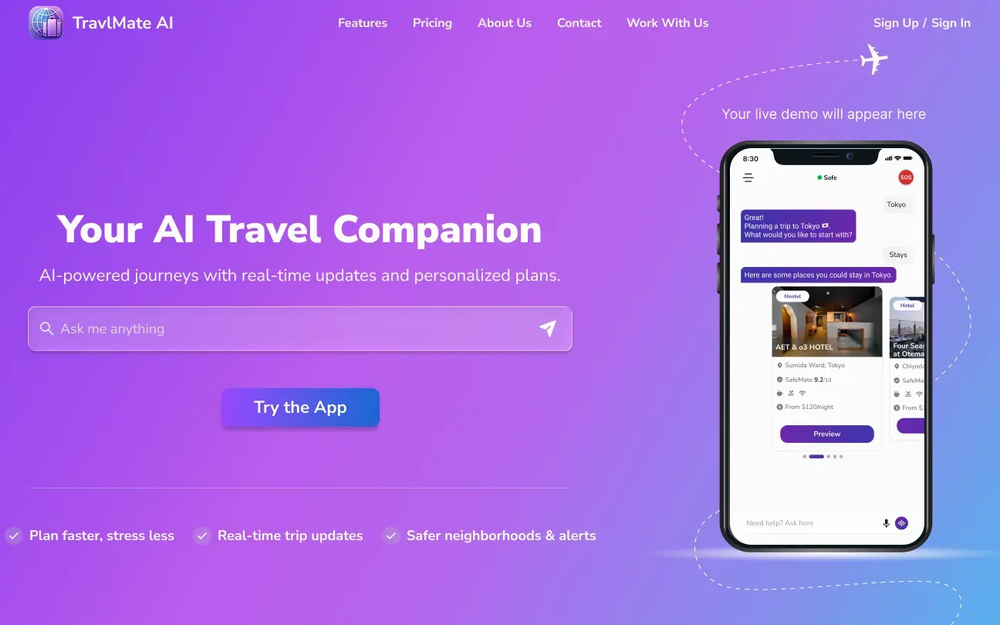
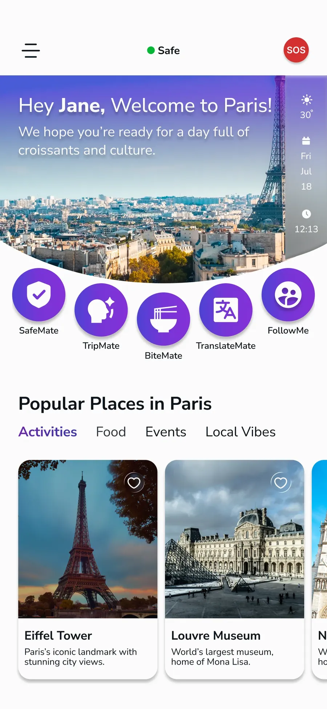
TravlMate
An AI-powered travel super app and website, designed end-to-end to support users across every stage of their journey, currently preparing for release.


TruNorth
An AI-powered career coaching app guiding users toward the right career path, awarded 3rd place at the PM Accelerator bootcamp.